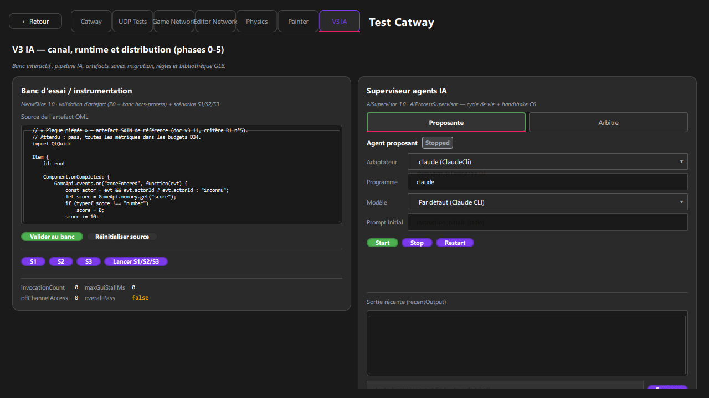
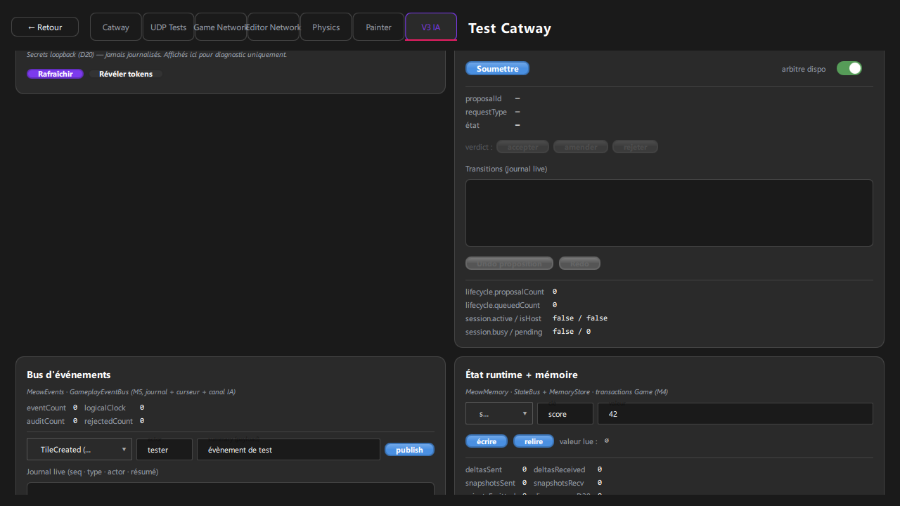
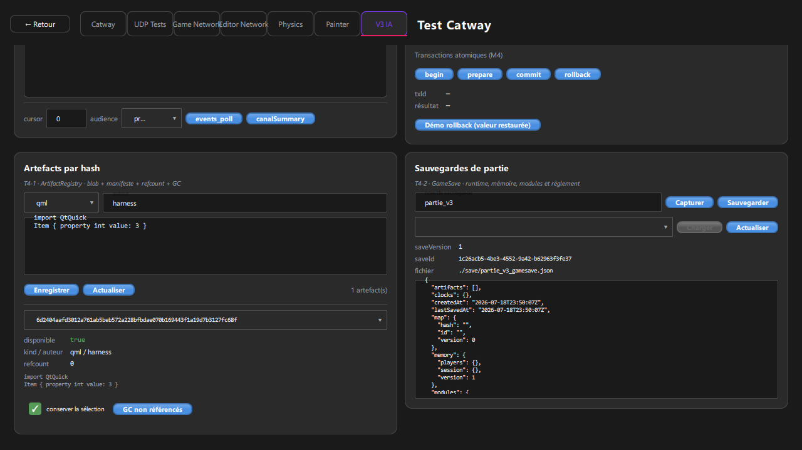
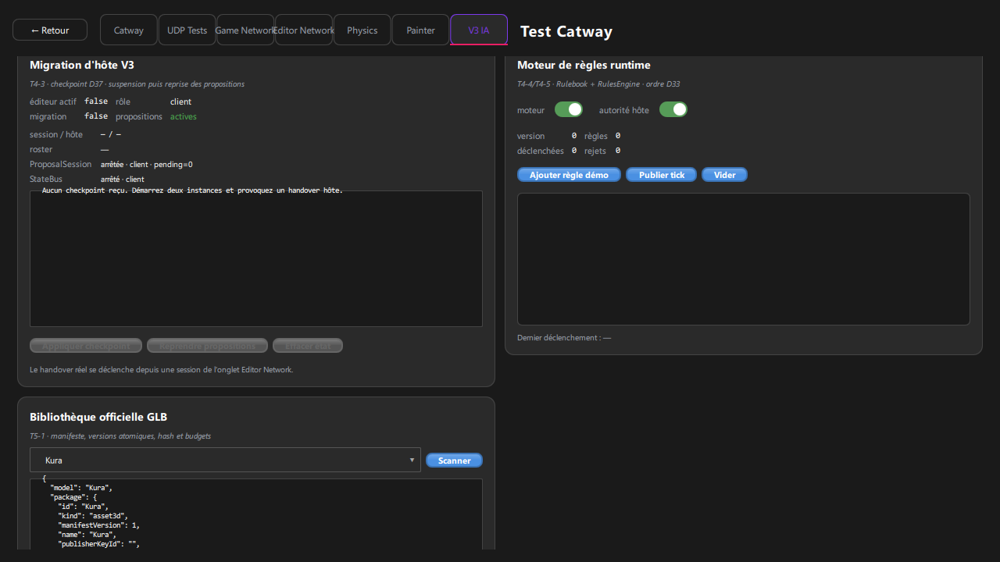

Choisir la source
Garde l’artefact sain fourni ou colle une source QML dans la grande zone de texte.
Tutoriel interactif · phases 0–5
Du premier scénario au package GLB : un parcours concret pour tester le canal IA, le runtime et la distribution sans quitter Meownopoly.

01 · Accès
Choisir « Test Catway ».
Ouvrir l’onglet « V3 IA ».
Faire défiler les panneaux en deux colonnes.
02 · Repères
Chaque carte correspond à une brique autonome du système.
Bleu/violet pour agir, vert pour réussir ou démarrer, gris lorsque l’action n’est pas disponible.
Compteurs, états et sorties monospace permettent de confirmer immédiatement le résultat.
03 · Valider une slice
Garde l’artefact sain fourni ou colle une source QML dans la grande zone de texte.
Le P0 statique puis le banc hors-process produisent un verdict et des métriques.
Teste chaque scénario séparément, ou utilise « Lancer S1/S2/S3 » pour la campagne complète.
offChannelAccess = 0 et overallPass = true sont les deux indicateurs clés.
Après une modification, relance toujours la validation avant les scénarios : un verdict ancien ne couvre pas la nouvelle source.
04 · Canal IA
« Proposante » fabrique les propositions ; « Arbitre » les juge.
Sélectionne Claude ou Codex, le programme, le modèle et le prompt initial.
Attends l’état Ready. Pour l’arbitre, lance aussi le test de handshake.
Dans « Passerelle MCP », vérifie présence, écoute, port et disponibilité HTTP.

05 · Cycle de décision
Renseigne l’auteur, le type d’opération et le prompt joueur.
Active « arbitre dispo », puis clique sur « Soumettre ».
Observe proposalId, requestType et les transitions du journal.
Accepte, amende ou rejette. Utilise Undo/Redo seulement après une proposition appliquée.
Résultat attendu : le compteur queued retombe à 0 et l’état final apparaît dans le journal.
06 · Runtime observable
Choisis le type, l’acteur et le résumé, puis clique sur publish.
Utilise le curseur et l’audience avec events_poll ou canalSummary.
Sélectionne la portée session/joueur/tile, écris une clé, puis relis-la.
07 · Contenu et persistance


08 · Continuité de session
La migration réelle vient d’une session Editor Network.
Le panneau affiche rôle, roster, suspension des propositions et checkpoint.
Le bouton devient actif uniquement lorsque le checkpoint est complet.
Réactive les propositions après promotion/reconnexion.
09 · Rulebook
Autorise l’évaluation des règles.
Autorise le tick et l’application autoritaire.
Ajoute une règle connue, puis « Publier tick » permet de constater son déclenchement.
« Vider » supprime le règlement courant du harness. Utilise cette action seulement dans une session de test et vérifie le statut affiché dessous.
10 · Distribution
Actualise les modèles officiels GLB disponibles.
Choisis un modèle pour lire id, kind, version, hash et publisher.
Renseigne version, id, type, version minimale et budgets.
Corrige chaque erreur signalée avant toute distribution.
{
"manifestVersion": 1,
"id": "demo-cat",
"version": "1.0.0",
"kind": "asset3d",
"minGameVersion": "3.0.0",
"budgets": {
"triangles": 2000,
"maxTextureSize": 1024
}
}11 · Check-list
Reviens au sommaire pour rejouer une section, ou ouvre directement l’interface et suis cette check-list.
Navigation : ← → · Espace · Accueil · Fin · Échap